Обзор
На этой странице будет описан конвейер Maya для переноса растительных ресурсов с помощью логического разрушения в CRYENGINE.

Рис.1: Логическое разрушение в действии (с отображением информации об отладке физики: F10 или p_draw_helper=1)
Учебные файлы
Исходная сцена Maya с экспортированными файлами CRYENGINE:
Предварительные требования для этого урока
Прежде чем продолжить изучение этого руководства, убедитесь, что вы прочитали и поняли следующее:
Предварительная информация
При работе над активом обязательно помните о следующих вещах:
- Не создавайте никаких дополнительных прокси-объектов для частей, которые вы хотите сломать; просто физизуйте видимую сетку SubID для разрушаемых частей.
- Обязательно избегайте зазоров/дыр и закройте процедурную разрушаемую сетку (герметичный, водонепроницаемый прокси).
- В отличие от рабочего процесса 3dsMax, вам не нужно объединять все в один объект-сетку. Вы можете отделить и создать родительские части растительной сетки (ствол, ветви и листья) в узле «_group». Тебе решать.
- В CRYENGINE Sandbox материалу вашего разрушаемого объекта необходимо назначить Surface_Type: "wood_breakable", чтобы движок активировал логическое разрушение для геометрии.
- Логическое разрушение может быть довольно тяжелым для производительности в зависимости от различных факторов:
- Геометрическая сложность булевой формы.
- Геометрическая сложность хрупкого актива.
- Количество разрушаемых объектов, используемых на уровне.
- Число последовательных логических значений, примененных к разрушаемому объекту.
Первоначальная настройка Maya
В этом уроке мы будем создавать наш ресурс в следующем каталоге. Мы также включили туда начальную и конечную сцену Maya: (<GameFolder> обычно представляет собой путь к "<YOUR_CRYENGINE_FOLDER>\GameSDK\")
<GameFolder>\Objects\tutorial\vegetation\05\tree\boolean_destruction\maya\
Все наши экспортированные ресурсы будут сохранены в этой папке проекта. Некоторые текстуры, которые мы будем использовать, будут взяты из уже существующих ресурсов, и мы укажем вам каталог, в котором они находятся, когда придет время в уроке.
Мы продолжим исходить из предположения, что вы уже создали основы ресурса, поскольку это не учебник по моделированию Maya. Мы начнем с подготовки актива, готового к CRYENGINE, назначения (под)материала группы материалов соответствующим полигонам и настройки материала.
Для начала вы можете открыть обучающую сцену Maya только с созданными геометрическими ресурсами: "palm_tree_start.ma"
Если вы хотите увидеть, что вы собираетесь создать в ближайшие 15–30 минут, вы можете открыть финальную сцену Maya: "palm_tree_final.ma"
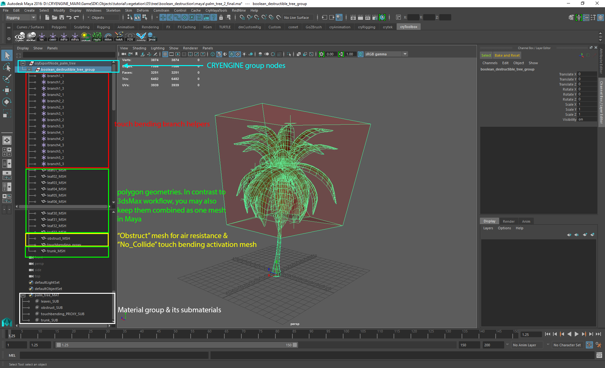
Рис. 2: Maya обзор готовой модели, включая видимые (рендеринговые) сетки, сетки «no_collide» и «препятствия».
Создание Материала
Добавьте группу материалов и включите шейдеры Maya.
Как и в предыдущих уроках по растительности, мы должны создать пустой объект. Группа материалов с кнопкой полочки "MAT.ED"из установленного Крайтек полка:
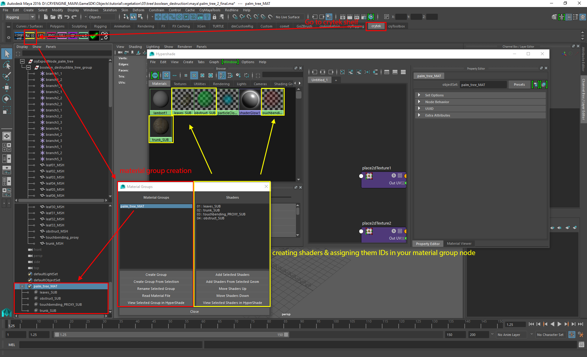
Pic03a: Рабочий процесс настройки материала Maya для CRYENGINE
Внутри этой группы нам нужно включить стандартные шейдеры Maya, чтобы сформировать группу материалов. Выберите шейдер Блинна/Фонга. На этот раз нужны четыре шейдера:
- (ID 01): один шейдер для листьев,
- (ID 02): один для ломающегося ствола дерева,
- (ID 03): один для прокси-сервера активации сенсорного управления.
- (ID 04): один для имитации верхушки дерева, когда дерево распадается на части.
Сначала мы создадим шейдеры для частей объекта растительности. В Maya откройте "HyperShade". Создайте новую группу материалов под названием «tutorial_boolean_destruction_maya». Затем создайте четыре шейдера, которые нам нужно добавить в качестве подматериалов в группу материалов. Назовите первый SubId "leaves_SUB", второй "trunk_SUB", третий SubId "touchbending_proxy_SUB" и четвертый "obstruct_SUB".
Имена шейдеров не важны. Просто назовите их что-нибудь, соответствующее их назначению, чтобы вы могли их легко отличить. Возможно, вы захотите уменьшить непрозрачность шейдера «сетка активации сенсорного изгиба», чтобы видеть сквозь него и различать листья.
Добавьте дополнительный атрибут «Физикализировать» к шейдерам
Залог успеха настройки Логическая разрушаемая растительность имеет правильный "Физически дополнительный атрибут для материала/шейдера.
Используйте "Добавить атрибут" средства экспорта Maya в CRYENGINE, чтобы добавить этот атрибут "Физикализировать" к шейдерам.
Когда дело доходит до процесса создания материала в форматах от Maya до CRYENGINE, мы должны добавить к шейдерам дополнительный атрибут «Физикализировать». В "Крайтек"полка открыта"Инструмент экспорта", выбрав шейдеры, нажмите кнопку "Добавить атрибут"Кнопка.
Помните, что вы не получите никакой обратной связи от "Добавить атрибут" в любом случае, вы должны проверить "Дополнительный атрибут" раздел Maya Материала, соединения или геометрии.
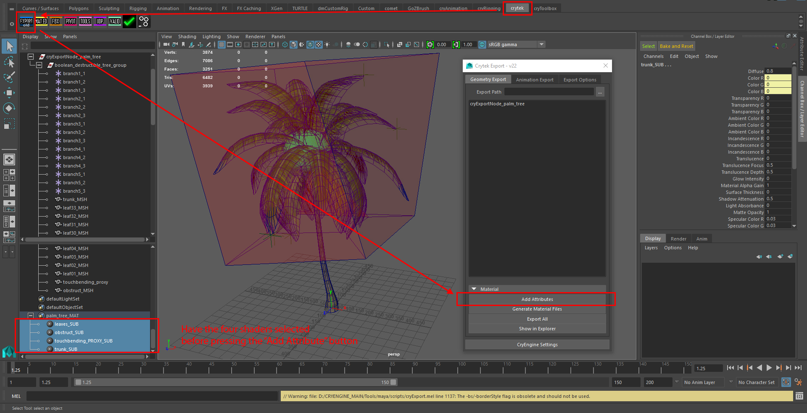
Pic03b: Дополнительный атрибут «Физализация».
Настройка шейдера "leaves_SUB"
Откройте leaves_SUB шейдер (ID: 01) в редакторе атрибутов Maya.
Установите дополнительные атрибуты, которые вы добавили, как «Физическая реализация: нет"
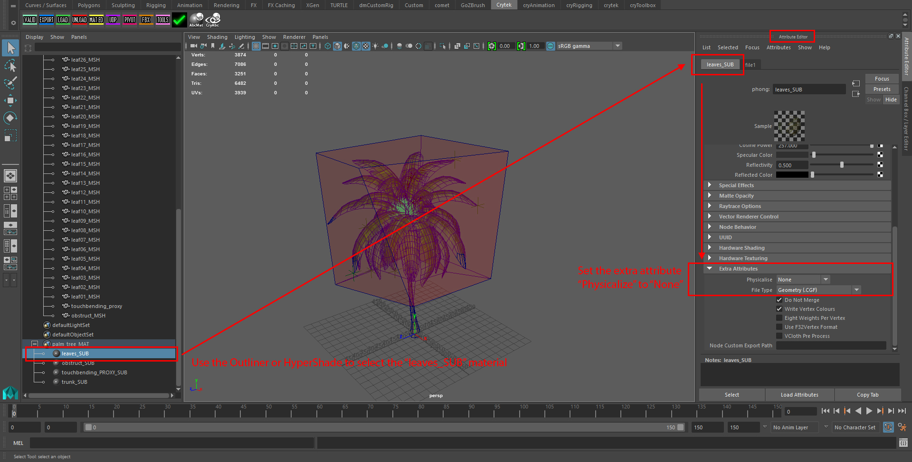
Pic04: Установите дополнительный атрибут Physicalize для подматериала. ID 01
Необязательно: назначьте файлы текстурных карт слотам цветной текстуры.как текстуры во вьюпорте Maya.
Загрузите диффузную карту и карту нормалей.
Файл примера относится к следующим текстурам, уже представленным в файлах учебников:
<>Your_Project>\Assets\Objects\tutorial\vegetation\05\tree\boolean_destruction\maya\tutorial_boolean_leaf_diff.tif<Your_Project>\Assets\Objects\tutorial\vegetation\05\tree\boolean_destruction\maya\tutorial_boolean_leaf
Настройка шейдера "trunk_SUB"
Откройте trunk_SUB шейдер (ID: 02) в редакторе атрибутов Maya.
Установите дополнительные атрибуты, которые вы добавили, как «Физическая реализация: по умолчанию"
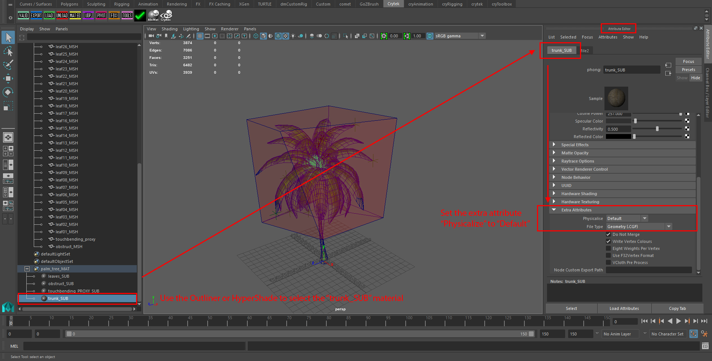
Pic05: Установите дополнительный атрибут Physicalize для подматериала. ID 02
Необязательно: назначьте файлы текстурных карт слотам цветной текстуры.как текстуры во вьюпорте Maya.
Загрузите диффузную карту и карту нормалей для путей материалов. Карта нормалей также должна содержать альфа-карту для значения сглаживания PBS.
Файл примера относится к следующим текстурам, уже представленным в файлах учебников:
<>Your_Project>\Assets\Objects\tutorial\vegetation\05\tree\boolean_destruction\maya\tutorial_boolean_trunk<Your_Project>\Assets\Objects\tutorial\vegetation\05\tree\boolean_destruction\maya\tutorial_boolean_trunk
Для работы Boolean Destruction не требуется дополнительная геометрия прокси. Материал для ствола должен физизировать рендермеш, чтобы ствол был прочным и хрупким.
Есть две причины, по которым дополнительная прокси-геометрия не работает с логическим разрушением:
- Точность: логическая система использует точное обнаружение попаданий. Это делает грубый физический прокси устаревшим и необходимой физикализацией рендермеша.
- Производительность: как только первое воздействие вызывает дыру в результате логической вычитания, форма и геометрия рендер-меша изменяются. Дополнительный физический прокси будет означать, что второй объект также необходимо разрезать, чтобы следующая пуля прошла через вновь созданное пустое пространство.
Настройка шейдера "touchbending_proxy_SUB"
Откройте touchbending_proxy_SUB шейдер (ID: 03) в редакторе атрибутов Maya.
Установите дополнительные атрибуты, которые вы добавили, как «Физическая реализация: NoCollide"
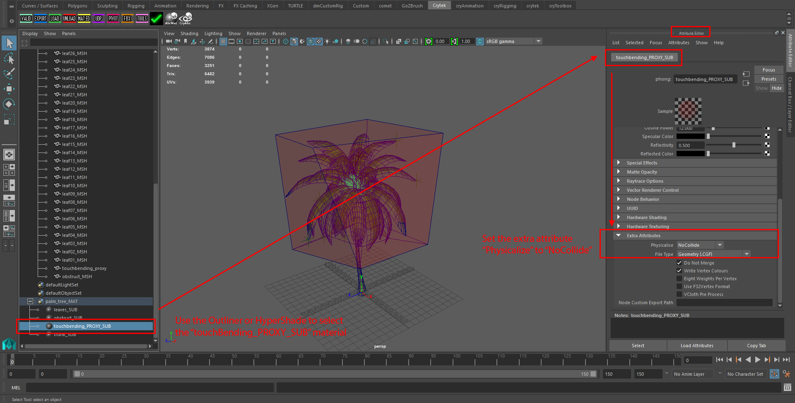
Рис06: Установите дополнительный атрибут Physicalize для подматериала ID 03
Для Сенсорный изгиб установка створок, необходимо обратить внимание на правильную именование из помощники ветвей на поверхности листьев.
В дополнение к этому, геометрия ваших листьев должна иметь хороший непересекающийся макет UV.
Этот подматериал используется для установки Touch Bending на листьях. Для получения дополнительной информации о настройке сенсорного изгиба перейдите по ссылке
Настройка шейдера "obstruct_SUB"
Откройте obstruct_SUB шейдер (ID: 04) в редакторе атрибутов Maya.
Установите дополнительные атрибуты, которые вы добавили, как «Физически реализовать: препятствовать"
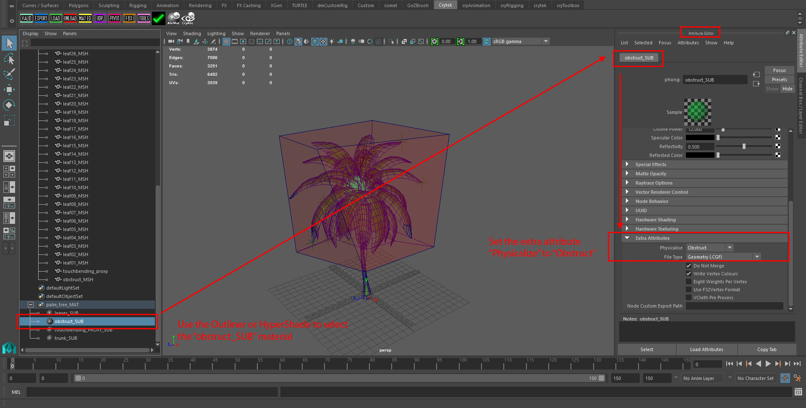
Рис07: Установите дополнительный атрибут Physicalize для подматериала ID 04
Это физика Параметр obstruct в подматериале используется для определения сопротивления воздуха этому объекту. Величина сопротивления воздуха определяется размером объема препятствия. Чем больше препятствовать объема, тем медленнее будет падать дерево.
Примеры:
- Если вы сломаете ствол дерева и обнаружите, что его верхняя часть падает слишком медленно, это означает, что ваш прокси-блок слишком велик. Уменьшите размер объема препятствий.
- Если вы сломали ствол дерева и обнаружили, что его верхняя часть падает слишком быстро, увеличьте размер препятствия.
Экспортируйте материал
Теперь мы настроили материал для объекта с четырьмя SubIds, два для видимых частей материала (листья и ствол), а два других для управления активацией сенсорного изгиба (tb_proxy) и определения сопротивления воздуха (препятствовать).
Наконец, мы экспортируем *.MTL файл в папку нашего проекта, чтобы завершить настройку материала по этому пути:
<Your_Project>\Assets\Objects\tutorial\vegetation\05\tree\boolean_destruction\maya\tutorial_boolean_destruction.mtl
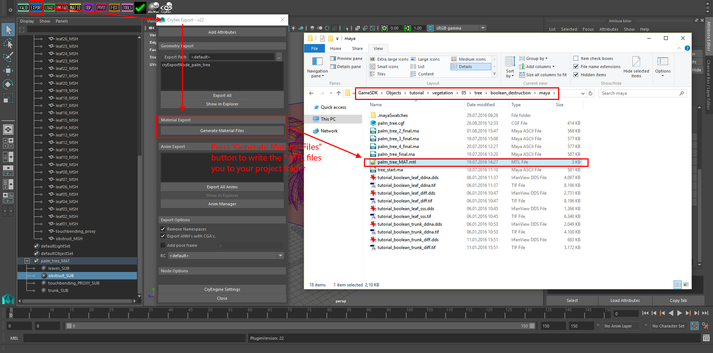
Pic08a: Создайте файл материала *.MTL из средства экспорта Maya в CRYENGINE.
Геометрия
Используйте следующий процесс создания геометрии, описанный ниже, в качестве руководства. Вам не нужно следовать ему, поскольку геометрические объекты уже готовы и предоставлены учебными файлами Maya в разделе «Файлы учебников».
Нашей геометрией для этого урока будет пальма. Это растение идеально подходит для объяснения этого типа технологии, поскольку его ствол достаточно тонкий, чтобы его можно было правдоподобно сломать с помощью логической операции разрушения. Вдобавок ко всему, крона листьев является хорошим примером того, как работают объемы препятствий, когда речь идет о сопротивлении воздуха кускам, которые впоследствии упадут.
Создание багажника
Создайте геометрию ствола дерева и примените материал (tutorial_boolean_destruction.mtl) мы только что создали к этому. Измените материал SubId на 2 («хобот»). Фнаконец-то тыувидеть Развернуть UVW модификатор для настройки оболочки UV.
Этот раздел нашей геометрии будет разрушаемой частью. Обязательно избегайте дыр в сетке. Логическая операция может быть успешно применена только к полностью замкнутой геометрии.
Форма логического разреза по умолчанию имеет предопределенную ширину, поэтому сохраняйте разумное значение радиуса ствола, чтобы получить чистые разрезы по всей сетке. Ствол сломается только тогда, когда эта операция прорежет его полностью.
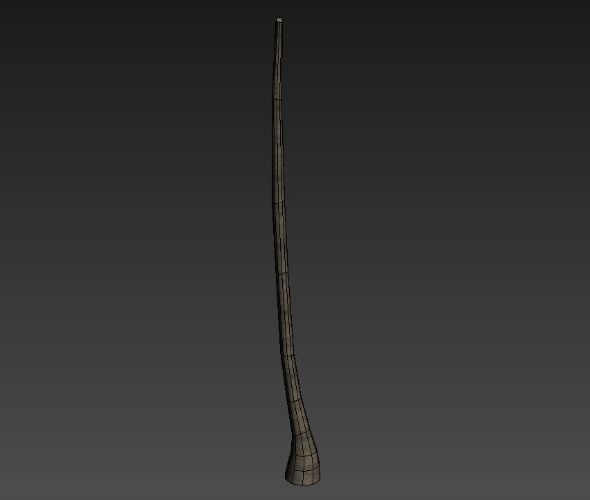
Рис8: Геометрия ствола пальмы.
Создание листовой кроны
Затем создайте одну большую сетку листьев для вашей пальмы. иприменить материал (tutorial_boolean_destruction.mtl) мы только что создали к этому. Сповесьте его материал SubId на 1 («листья»). Наконец-то тыустановите модификатор «Unwrap UVW», чтобы настроить оболочку UV так, чтобы она помещалась только вокруг одного из листьев текстуры.
Добавление сенсорного изгиба
В этом примере крона дерева будет состоять из двух наборов сгибаемых листьев. Это добавит большей правдоподобности процессу взлома. С помощью Touch Bending листья станут физическими, как только они упадут на землю, когда дерево будет разрушено. Сначала скопируйте лист и переместите оболочку UV вашей копии на другую текстуру листа. Теперь создайте две конфигурации сгибания касанием для обеих створок.
Пока не копируйте листья и не добавляйте прокси-сервер Touch Bending, пока мы не перейдем к следующему шагу.

Рис.9: Оба листа с манекенами Touch Bending.
Добавление изгиба деталей
Чтобы добиться еще большей достоверности нашего актива, мы будем использовать Детальная гибка система. Это позволит нам добавить листьям разнообразные движения.
Для получения дополнительной информации о настройке гибки деталей перейдите по ссылке
На протяжении всего этого процесса вы можетеЗавершите геометрию кроны листа и в конце добавьте к ней подходящий прокси Touch Bending.
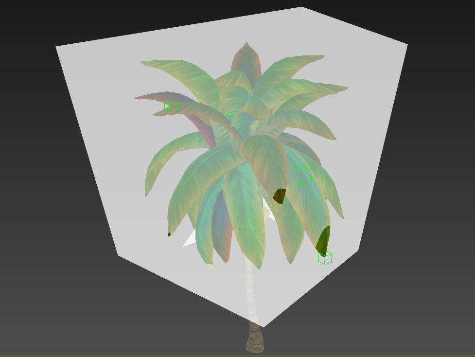
Рис. 10: Геометрия кроны пальмы с использованием установок сенсорной и детальной гибки.
Добавление геометрии сопротивления воздуха (препятствие)
Для этой функции вам необходимо настроить единую часть геометрии, чтобы определить правильное сопротивление воздуха. Чем больше его объем, тем медленнее верхняя часть будет падать после того, как вы выстрелите в дерево. Это поможет дереву упасть более правдоподобно. Создайте простую низкополигональную сферу радиусом примерно 1 м и поместите ее прямо в середину кроны листа.

Рис. 11: Дополнительная геометрия препятствий внутри кроны листа.
Экспортируйте геометрию
Теперь мы готовы экспортировать нашу геометрию в движок. Вот иерархия экспорта, которую мы должны создать:
Pic01: Окончательная иерархия экспорта с этой страницы документа. Первоначальная настройка Maya раздел.
Использование средства экспорта CRYENGINE для экспорта файлы Maya:
- Добавьте cryExportRoot узел с использованием "Инструменты"кнопка полки из Крайтек полка или создайте пустую группу и назовите ее "cryExportNode_palm_tree".
смелый Часть подстроки — это имя файла, который он создает. Итак, файл *.CGF называется "palm_tree.cgf". - Создайте под этим корневым узлом экспорта группу с именем "boolean_destructible_tree_group". смелый часть подстроки становится именем актива, отображаемым в CRYENGINE Sandbox: boolean_destructible_tree
- Родительское все ветка#_# локаторов, сетки листьев и стволов, геометрия прокси/препятствий - все под "boolean_destructible_tree_group" узел.
- Выберите "boolean_destructible_tree_group" и перейдите в раздел дополнительных атрибутов и отметьте эту группу для экспорта в формате *.CGF.
- Нажмите кнопку "Экспортировать все» / «Экспортировать выбранное" в окне экспорта с Maya на CRYENGINE.
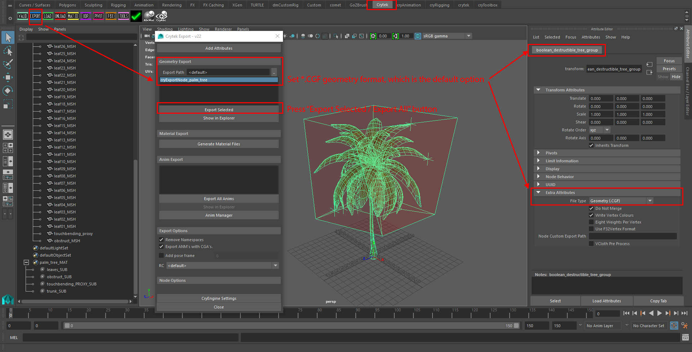
Рисунок 13: Экспорт логической разрушаемой пальмы как *.CGF
Продолжить CRYENGINE
Мы завершили настройку Maya части руководства. Чтобы продолжить, перейдите на следующую страницу, где мы настраиваем материал и используем инструмент «Растительность», чтобы разместить некоторые из этих активов Touch Bending.